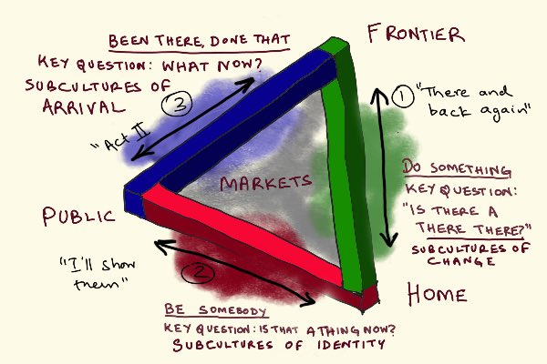

20. Crackpot Metaphysics
December 18, 2018
In which I share my backstage crackpot metaphysics — a poiesis-to-praxis spectrum measure for thought, mapped onto a triangle visualization — where every thought can be plotted by how far it sits from pure self-expression versus pure worldly engagement, riffing on Hannah Arendt's vita activa.
Crackpot metaphysics math/geometry alert.
This thread is likely only of interest to people who follow the backstage threads of my thinking/writing based on my moderately insane inside-baseball pseudomath constructs.
This thread is likely only of interest to people who follow the backstage threads of my thinking/writing based on my moderately insane inside-baseball pseudomath constructs.
N = 0 for self, ∞ for stranger.
D = 0 for “there is no wrong way” solipsism, ∞ for inscrutable Martian judge (and very high for mysterious, partly algorithmic virality standards)
For “normal” standards, D will be finite and >0, so P= 0 for pure poiesis, ∞ for pure praxis.
D = 0 for “there is no wrong way” solipsism, ∞ for inscrutable Martian judge (and very high for mysterious, partly algorithmic virality standards)
For “normal” standards, D will be finite and >0, so P= 0 for pure poiesis, ∞ for pure praxis.
Headline: Breakthrough on backstage scaffolding problem for my thinking that’s been bugging me since 2016: a poiesis-to-praxis spectrum measure for “work”!
P=N/D = (average social distance from which thing will be judged)/(average arbitrariness with which a thing will be judged)
P=N/D = (average social distance from which thing will be judged)/(average arbitrariness with which a thing will be judged)
Think “poem that only makes sense to you” for pure poiesis, “Martian tax return” for pure praxis.
See also my “make your own rules” post from this year to see how I work with this construct in an applied way. Yes, it’s a very inside-my-own-head piece of INTP/J nerdery but I think it’s not too opaque if you’ve relatively close to my headspace Make Your Own Rules
P is actually a vector (P, θ ) with origin at “void” in my goat-crow-rat triangle visualization, with magnitude P and direction θ being interpreted by the triangle semantics. See my 2 posts from 2017 for background.
Been There, Done That
Thingness and Thereness
Been There, Done That
Thingness and Thereness

In relation to the GCR triangle, my formula for P nicely maps to 0 for the void at triangle centroid and ∞ for arbitrarily high potential complexity of situating your work in the universe. The boundary represented by the triangle maps to a threshold value of P. Call it P*.
The original trailhead for this bunnytrail btw was Hannah Arendt “The Human Condition” book which was a key read for 2016. Here are some slides with my notes:
The Computational Condition
... and a post with my gloss on her model of vita activa
How to Make History
The Computational Condition
... and a post with my gloss on her model of vita activa
How to Make History
My bold claim: any thought you think can be plotted on the triangle. It lives at coordinates (P, θ). A thought trail over time can be captured as a curve parametrized by time, (P(t), θ(t)). But thoughts —> triangle is many-to-one. Closer to the center, less unique the thoughts.
P*(θ) is a nonlinear, piecewise continuous function with 3 regimes corresponding to the edges, and 3 discontinuities, corresponding to the vertices. Think of these edges as 3 tires where rubber meets road.
P* is basically where praxis > poiesis in a context-dependent sense. It maps to a neuroscience boundary between DMN (default mode network) headspace and TPN (task-positive network) headspace. It’s the boundary of practicality.
There’s also the super-crackpot idea that P*(θ,t) is actually a Penrose triangle in some projections, modeling core “break” in psyche of any live person. It looks connected but paradoxical from some angles but if you change POV, break causing the illusion will be visible.
So it’s really a manifold of thinkable thoughts in 3d space (P, θ,t). I haven’t yet worked out how to precisely model the time part. It may not be worth elaborating since I can’t think of a clean empirical interpretation, only a metaphysical one.
Mindfuck extension: t itself is a function of P and θ! Because time warps from chronos —> kairos —> aionic as you retreat into your own head. Time stops at pure poiesis. Singularity past your own event horizon as you retreat inside your head 😎😇
Fun fact #2: this thread itself can be mapped to the triangle. It wanders in and out past the green edge, getting deeper in for more crackpot tweets, further out for points that make sense from external frames of reference.
Fun fact #1: the triangular construct can itself be plotted inside the triangle. I think it is close to the center, somewhere along the blue edge.
I’ll probably dump this Penrose triangle thing in future versions. It’s just a little too crackpot and bolted-on even for me. It does arise naturally from the phenomenology, but fits awkwardly with the rest of the mode
A logical thought curve will be continuous. An intuitive one will jump around. An “Aha!” will be a big discontinuous jump inward (more poiesis). An “UnAha!” (falsification) will be a big discontinuous jump outward. Here’s an old post on UnAha! experiences: The UnAha! Experience
For all you mysticism nerds, “enlightenment” is obviously at the exact center where time stops (pure aion), marked by thoughts like “that thou art” or “the rock has Buddha nature” just next to it. The exact center = non-thought.
Fun fact #3, the “breakthrough” idea here (for a poiesis-praxis parameter) is a neat leap into the triangle across the red edge.
Anyhow, there you go. I may write this all up as a post, but if not this thread is it.
This might interest @fortelabs
This might interest @fortelabs
A theory-to-practice thought trail will be an arrow heading out. An example-to-generalization will head the other way. Triangle contours = consistent time perception. Going mad is a terminal inward spiral. Rejoining humanity from the depths of madness is an outward spiral.